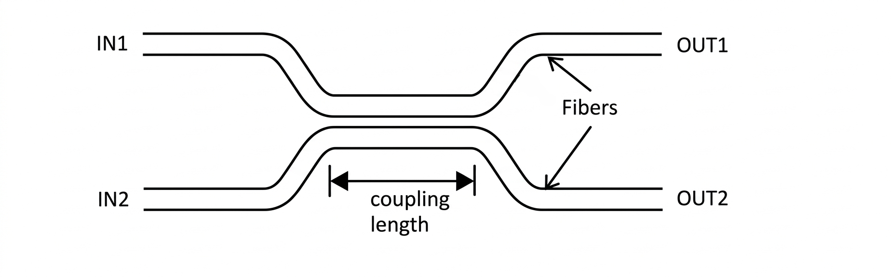

Consider two independent waveguides supporting modes \(a(z)\) and \(b(z)\).
For waveguide 1:
\[ E_y(x,z)\propto e^{-i\beta_1 z} \] \[ \frac{da}{dz}=-i\beta_1 a \tag{10.1} \]For waveguide 2:
\[ \frac{db}{dz}=-i\beta_2 b \tag{10.2} \]When the waveguides are brought close, evanescent fields overlap and coupling occurs:
\[ \frac{da}{dz}=-i\beta_1 a - i\kappa_{12} b \tag{10.3} \] \[ \frac{db}{dz}=-i\beta_2 b - i\kappa_{21} a \tag{10.4} \]\(\kappa_{12},\kappa_{21}\) are coupling coefficients. For identical waveguides: \(\kappa_{12}=\kappa_{21}=\kappa\).
Substitution into Equations (10.3) and (10.4) gives:
\[ a_0(\beta-\beta_1)-\kappa_{12} b_0=0 \tag{10.7} \] \[ b_0(\beta-\beta_2)-\kappa_{21} a_0=0 \tag{10.8} \]For non-trivial solutions:
\[ \beta^2-\beta(\beta_1+\beta_2)+(\beta_1\beta_2-\kappa^2)=0 \tag{10.9} \]where
\[ \kappa=\sqrt{\kappa_{12}\kappa_{21}}. \] Thus the propagation constants of the symmetric and antisymmetric supermodes are: \[ \beta_{s,a}=\frac{\beta_1+\beta_2}{2} \pm \sqrt{\frac{(\beta_1-\beta_2)^2}{4}+\kappa^2} \tag{10.10} \]where
\[ \Delta\beta=\beta_1-\beta_2. \]Power conservation:
\[ |a(z)|^2+|b(z)|^2=1. \tag{10.15} \]For identical waveguides (\(\Delta\beta=0\)):
\[ L_c=\frac{\pi}{2\kappa} \tag{10.18} \]If \(L\) is depended on \(\Delta \beta\)
Suppose a light enters wave guide 1, emerge from wave guide 2
Cross-state
Suppose a light enters wave guide 1, emerge from wave guide 1
Parallel-state
This is used for optical switches.
When electric field is applied at interaction length, E (oscillating voltage)
\(\Delta \beta\) will become function of E
\(\beta\) depends on
- Time Divisiion Multiplexing (TDM)
- Routing
- On Chip controlling
- Wave length filtering